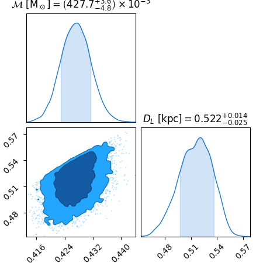

<!DOCTYPE html>
<html class="writer-html5" lang="en" >
<head>
  <meta charset="utf-8" />
  <meta name="generator" content="Docutils 0.19: https://docutils.sourceforge.io/" />

  <meta name="viewport" content="width=device-width, initial-scale=1.0" />
  
  <title>Resampling posteriors &mdash; lisacattools 1.1.1 documentation</title>
  

  
  <link rel="stylesheet" href="../_static/css/theme.css" type="text/css" />
  <link rel="stylesheet" href="../_static/pygments.css" type="text/css" />
  <link rel="stylesheet" href="../_static/pygments.css" type="text/css" />
  <link rel="stylesheet" href="../_static/css/theme.css" type="text/css" />
  <link rel="stylesheet" href="../_static/gallery.css" type="text/css" />
  <link rel="stylesheet" href="../_static/gallery-binder.css" type="text/css" />
  <link rel="stylesheet" href="../_static/gallery-dataframe.css" type="text/css" />
  <link rel="stylesheet" href="../_static/gallery-rendered-html.css" type="text/css" />

  
  

  
  

  

  
  <!--[if lt IE 9]>
    <script src="../_static/js/html5shiv.min.js"></script>
  <![endif]-->
  
    
      <script type="text/javascript" id="documentation_options" data-url_root="../" src="../_static/documentation_options.js"></script>
        <script data-url_root="../" id="documentation_options" src="../_static/documentation_options.js"></script>
        <script src="../_static/doctools.js"></script>
        <script src="../_static/sphinx_highlight.js"></script>
    
    <script type="text/javascript" src="../_static/js/theme.js"></script>

    
    <link rel="index" title="Index" href="../genindex.html" />
    <link rel="search" title="Search" href="../search.html" />
    <link rel="next" title="Scatter plots" href="plot_freq_amp.html" />
    <link rel="prev" title="UCB Use Case Gallery" href="index.html" /> 
</head>

<body class="wy-body-for-nav">

   
  <div class="wy-grid-for-nav">
    
    <nav data-toggle="wy-nav-shift" class="wy-nav-side">
      <div class="wy-side-scroll">
        <div class="wy-side-nav-search" >
          

          
            <a href="../index.html" class="icon icon-home"> lisacattools
          

          
          </a>

          
            
            
          

          
<div role="search">
  <form id="rtd-search-form" class="wy-form" action="../search.html" method="get">
    <input type="text" name="q" placeholder="Search docs" />
    <input type="hidden" name="check_keywords" value="yes" />
    <input type="hidden" name="area" value="default" />
  </form>
</div>

          
        </div>

        
        <div class="wy-menu wy-menu-vertical" data-spy="affix" role="navigation" aria-label="main navigation">
          
            
            
              
            
            
              <p class="caption" role="heading"><span class="caption-text">Contents:</span></p>
<ul>
<li class="toctree-l1"><a class="reference internal" href="../getting_started.html">Installation</a></li>
<li class="toctree-l1"><a class="reference internal" href="../getting_started.html#lisacattools">lisacattools</a></li>
<li class="toctree-l1"><a class="reference internal" href="../catalog.html">Catalog</a></li>
<li class="toctree-l1"><a class="reference internal" href="../analyze.html">Analyze</a></li>
</ul>
<p class="caption" role="heading"><span class="caption-text">Examples:</span></p>
<ul class="current">
<li class="toctree-l1 current"><a class="reference internal" href="index.html">UCB Use Case Gallery</a><ul class="current">
<li class="toctree-l2 current"><a class="current reference internal" href="#">Resampling posteriors</a></li>
<li class="toctree-l2"><a class="reference internal" href="plot_freq_amp.html">Scatter plots</a></li>
<li class="toctree-l2"><a class="reference internal" href="plot_source_joint_sky_pdf.html">Joint PDF of sky location</a></li>
<li class="toctree-l2"><a class="reference internal" href="plot_source_parameters.html">Corner plots</a></li>
<li class="toctree-l2"><a class="reference internal" href="plot_time_evolving_parameters.html">Connecting catalogs</a></li>
<li class="toctree-l2"><a class="reference internal" href="plot_galactic_coordinates.html">3D map of the galaxy</a></li>
<li class="toctree-l2"><a class="reference internal" href="plot_source_table.html">Parameter tables</a></li>
<li class="toctree-l2"><a class="reference internal" href="plot_source_sky_ellipses.html">Sky Localization Ellipses</a></li>
<li class="toctree-l2"><a class="reference internal" href="plot_sources_in_sky_circle.html">Select Sources in Sky Region</a></li>
</ul>
</li>
<li class="toctree-l1"><a class="reference internal" href="../examples_smbh/index.html">SMBH Use Case Gallery</a></li>
</ul>
<p class="caption" role="heading"><span class="caption-text">Tests:</span></p>
<ul>
<li class="toctree-l1"><a class="reference internal" href="../tests.html">Tests Report</a></li>
</ul>
<p class="caption" role="heading"><span class="caption-text">Coverage:</span></p>
<ul>
<li class="toctree-l1"><a class="reference internal" href="../coverage.html">Coverage Report</a></li>
</ul>

            
          
        </div>
        
      </div>
    </nav>

    <section data-toggle="wy-nav-shift" class="wy-nav-content-wrap">

      
      <nav class="wy-nav-top" aria-label="top navigation">
        
          <i data-toggle="wy-nav-top" class="fa fa-bars"></i>
          <a href="../index.html">lisacattools</a>
        
      </nav>


      <div class="wy-nav-content">
        
        <div class="rst-content">
        
          


<div role="navigation" aria-label="breadcrumbs navigation">

  <ul class="wy-breadcrumbs">
    
      <li><a href="../index.html" class="icon icon-home"></a> &raquo;</li>
        
          <li><a href="index.html">UCB Use Case Gallery</a> &raquo;</li>
        
      <li>Resampling posteriors</li>
    
    
      <li class="wy-breadcrumbs-aside">
        
          
            <a href="../_sources/examples_ucb/plot_source_Mc_DL.rst.txt" rel="nofollow"> View page source</a>
          
        
      </li>
    
  </ul>

  
  <hr/>
</div>
          <div role="main" class="document" itemscope="itemscope" itemtype="http://schema.org/Article">
           <div itemprop="articleBody">
            
  <div class="sphx-glr-download-link-note admonition note">
<p class="admonition-title">Note</p>
<p>Click <a class="reference internal" href="#sphx-glr-download-examples-ucb-plot-source-mc-dl-py"><span class="std std-ref">here</span></a>
to download the full example code</p>
</div>
<section class="sphx-glr-example-title" id="resampling-posteriors">
<span id="sphx-glr-examples-ucb-plot-source-mc-dl-py"></span><h1>Resampling posteriors<a class="headerlink" href="#resampling-posteriors" title="Permalink to this heading">¶</a></h1>
<p>Convert sampling parameters to derived parameters</p>
<p>This example shows how to change parameterization of the posterior samples.
The GBMCMC sampler uses frequency, frequency derivative, and GW amplitude in its waveform model.
For systems whose dynamics are driven by GR, those parameters can be converted to chirp mass and luminosity distance.
Here is a demonstration of how to do that by producing a chirpmass-distance corner plot.
Import modules</p>
<div class="highlight-default notranslate"><div class="highlight"><pre><span></span><span class="kn">import</span> <span class="nn">matplotlib.pyplot</span> <span class="k">as</span> <span class="nn">plt</span>
<span class="kn">from</span> <span class="nn">chainconsumer</span> <span class="kn">import</span> <span class="n">ChainConsumer</span>

<span class="kn">from</span> <span class="nn">lisacattools</span> <span class="kn">import</span> <span class="n">get_DL</span>
<span class="kn">from</span> <span class="nn">lisacattools</span> <span class="kn">import</span> <span class="n">get_Mchirp</span>
<span class="kn">from</span> <span class="nn">lisacattools.catalog</span> <span class="kn">import</span> <span class="n">GWCatalog</span>
<span class="kn">from</span> <span class="nn">lisacattools.catalog</span> <span class="kn">import</span> <span class="n">GWCatalogs</span>
<span class="kn">from</span> <span class="nn">lisacattools.catalog</span> <span class="kn">import</span> <span class="n">GWCatalogType</span>

<span class="c1"># Start by loading the main catalog file processed from GBMCMC outputs</span>
<a href="https://docs.python.org/3/library/stdtypes.html#str" title="builtins.str" class="sphx-glr-backref-module-builtins sphx-glr-backref-type-py-class sphx-glr-backref-instance"><span class="n">catPath</span></a> <span class="o">=</span> <span class="s2">&quot;../../tutorial/data/ucb&quot;</span>
<span class="n">catalogs</span> <span class="o">=</span> <span class="n">GWCatalogs</span><span class="o">.</span><span class="n">create</span><span class="p">(</span><span class="n">GWCatalogType</span><span class="o">.</span><span class="n">UCB</span><span class="p">,</span> <a href="https://docs.python.org/3/library/stdtypes.html#str" title="builtins.str" class="sphx-glr-backref-module-builtins sphx-glr-backref-type-py-class sphx-glr-backref-instance"><span class="n">catPath</span></a><span class="p">,</span> <span class="s2">&quot;cat15728640_v2.h5&quot;</span><span class="p">)</span>
<span class="n">final_catalog</span> <span class="o">=</span> <span class="n">catalogs</span><span class="o">.</span><span class="n">get_last_catalog</span><span class="p">()</span>
<a href="https://docs.python.org/3/library/stdtypes.html#list" title="builtins.list" class="sphx-glr-backref-module-builtins sphx-glr-backref-type-py-class sphx-glr-backref-instance"><span class="n">detections_attr</span></a> <span class="o">=</span> <span class="n">final_catalog</span><span class="o">.</span><span class="n">get_attr_detections</span><span class="p">()</span>
<span class="n">detections</span> <span class="o">=</span> <span class="n">final_catalog</span><span class="o">.</span><span class="n">get_detections</span><span class="p">(</span><a href="https://docs.python.org/3/library/stdtypes.html#list" title="builtins.list" class="sphx-glr-backref-module-builtins sphx-glr-backref-type-py-class sphx-glr-backref-instance"><span class="n">detections_attr</span></a><span class="p">)</span>

<span class="c1"># Sort table by SNR and select highest SNR source</span>
<span class="n">detections</span><span class="o">.</span><span class="n">sort_values</span><span class="p">(</span><span class="n">by</span><span class="o">=</span><span class="s2">&quot;SNR&quot;</span><span class="p">,</span> <span class="n">ascending</span><span class="o">=</span><span class="kc">False</span><span class="p">,</span> <span class="n">inplace</span><span class="o">=</span><span class="kc">True</span><span class="p">)</span>
<a href="https://docs.python.org/3/library/stdtypes.html#str" title="builtins.str" class="sphx-glr-backref-module-builtins sphx-glr-backref-type-py-class sphx-glr-backref-instance"><span class="n">sourceId</span></a> <span class="o">=</span> <span class="n">detections</span><span class="o">.</span><span class="n">index</span><span class="p">[</span><span class="mi">0</span><span class="p">]</span>
<span class="n">samples</span> <span class="o">=</span> <span class="n">final_catalog</span><span class="o">.</span><span class="n">get_source_samples</span><span class="p">(</span><a href="https://docs.python.org/3/library/stdtypes.html#str" title="builtins.str" class="sphx-glr-backref-module-builtins sphx-glr-backref-type-py-class sphx-glr-backref-instance"><span class="n">sourceId</span></a><span class="p">)</span>

<span class="c1"># Reject chain samples with negative fdot (enforce GR-driven prior)</span>
<span class="n">samples_GR</span> <span class="o">=</span> <span class="n">samples</span><span class="p">[(</span><span class="n">samples</span><span class="p">[</span><span class="s2">&quot;Frequency Derivative&quot;</span><span class="p">]</span> <span class="o">&gt;</span> <span class="mi">0</span><span class="p">)]</span>

<span class="c1"># Add distance and chirpmass to samples</span>
<span class="n">get_DL</span><span class="p">(</span><span class="n">samples_GR</span><span class="p">)</span>
<span class="n">get_Mchirp</span><span class="p">(</span><span class="n">samples_GR</span><span class="p">)</span>

<span class="c1"># Make corner plot</span>
<a href="https://docs.python.org/3/library/stdtypes.html#list" title="builtins.list" class="sphx-glr-backref-module-builtins sphx-glr-backref-type-py-class sphx-glr-backref-instance"><span class="n">parameters</span></a> <span class="o">=</span> <span class="p">[</span><span class="s2">&quot;Chirp Mass&quot;</span><span class="p">,</span> <span class="s2">&quot;Luminosity Distance&quot;</span><span class="p">]</span>
<a href="https://docs.python.org/3/library/stdtypes.html#list" title="builtins.list" class="sphx-glr-backref-module-builtins sphx-glr-backref-type-py-class sphx-glr-backref-instance"><span class="n">parameter_symbols</span></a> <span class="o">=</span> <span class="p">[</span><span class="sa">r</span><span class="s2">&quot;$\mathcal</span><span class="si">{M}</span><span class="s2">\ [{\rm M}_\odot]$&quot;</span><span class="p">,</span> <span class="sa">r</span><span class="s2">&quot;$D_L\ [{\rm kpc}]$&quot;</span><span class="p">]</span>

<span class="n">df</span> <span class="o">=</span> <span class="n">samples_GR</span><span class="p">[</span><a href="https://docs.python.org/3/library/stdtypes.html#list" title="builtins.list" class="sphx-glr-backref-module-builtins sphx-glr-backref-type-py-class sphx-glr-backref-instance"><span class="n">parameters</span></a><span class="p">]</span><span class="o">.</span><span class="n">values</span>

<span class="n">c</span> <span class="o">=</span> <span class="n">ChainConsumer</span><span class="p">()</span><span class="o">.</span><span class="n">add_chain</span><span class="p">(</span><span class="n">df</span><span class="p">,</span> <a href="https://docs.python.org/3/library/stdtypes.html#list" title="builtins.list" class="sphx-glr-backref-module-builtins sphx-glr-backref-type-py-class sphx-glr-backref-instance"><span class="n">parameters</span></a><span class="o">=</span><a href="https://docs.python.org/3/library/stdtypes.html#list" title="builtins.list" class="sphx-glr-backref-module-builtins sphx-glr-backref-type-py-class sphx-glr-backref-instance"><span class="n">parameter_symbols</span></a><span class="p">,</span> <span class="n">cloud</span><span class="o">=</span><span class="kc">True</span><span class="p">)</span>
<span class="n">c</span><span class="o">.</span><span class="n">configure</span><span class="p">(</span><span class="n">flip</span><span class="o">=</span><span class="kc">False</span><span class="p">)</span>
<a href="https://matplotlib.org/stable/api/figure_api.html#matplotlib.figure.Figure" title="matplotlib.figure.Figure" class="sphx-glr-backref-module-matplotlib-figure sphx-glr-backref-type-py-class sphx-glr-backref-instance"><span class="n">fig</span></a> <span class="o">=</span> <span class="n">c</span><span class="o">.</span><span class="n">plotter</span><span class="o">.</span><span class="n">plot</span><span class="p">(</span><span class="n">figsize</span><span class="o">=</span><span class="mf">1.5</span><span class="p">)</span>
<a href="https://matplotlib.org/stable/api/_as_gen/matplotlib.pyplot.show.html#matplotlib.pyplot.show" title="matplotlib.pyplot.show" class="sphx-glr-backref-module-matplotlib-pyplot sphx-glr-backref-type-py-function"><span class="n">plt</span><span class="o">.</span><span class="n">show</span></a><span class="p">()</span>
</pre></div>
</div>

<p class="sphx-glr-script-out">Out:</p>
<div class="sphx-glr-script-out highlight-none notranslate"><div class="highlight"><pre><span></span>Init the memory cache
(lisacattools.utils._read_chain_file:130) 2023-02-06 17:36:29,480 INFO utils newfunc Init the memory cache
Cache LDC0092117281-cat15728640_v2_chains_1100s.h5
(lisacattools.utils._read_chain_file:133) 2023-02-06 17:36:29,480 INFO utils newfunc Cache LDC0092117281-cat15728640_v2_chains_1100s.h5
INFO:matplotlib.mathtext:Substituting symbol M from STIXNonUnicode
INFO:matplotlib.mathtext:Substituting symbol M from STIXNonUnicode
INFO:matplotlib.mathtext:Substituting symbol M from STIXNonUnicode
</pre></div>
</div>
<p class="sphx-glr-timing"><strong>Total running time of the script:</strong> ( 0 minutes  1.576 seconds)</p>
<div class="sphx-glr-footer class sphx-glr-footer-example docutils container" id="sphx-glr-download-examples-ucb-plot-source-mc-dl-py">
<div class="sphx-glr-download sphx-glr-download-python docutils container">
<p><a class="reference download internal" download="" href="../_downloads/66f09fb12b9b2a0afa809faccc8e415f/plot_source_Mc_DL.py"><code class="xref download docutils literal notranslate"><span class="pre">Download</span> <span class="pre">Python</span> <span class="pre">source</span> <span class="pre">code:</span> <span class="pre">plot_source_Mc_DL.py</span></code></a></p>
</div>
<div class="sphx-glr-download sphx-glr-download-jupyter docutils container">
<p><a class="reference download internal" download="" href="../_downloads/136f429d364fbf5ab2b8526602cc4459/plot_source_Mc_DL.ipynb"><code class="xref download docutils literal notranslate"><span class="pre">Download</span> <span class="pre">Jupyter</span> <span class="pre">notebook:</span> <span class="pre">plot_source_Mc_DL.ipynb</span></code></a></p>
</div>
</div>
<p class="sphx-glr-signature"><a class="reference external" href="https://sphinx-gallery.github.io">Gallery generated by Sphinx-Gallery</a></p>
</section>


           </div>
           
          </div>
          <footer>
    <div class="rst-footer-buttons" role="navigation" aria-label="footer navigation">
        <a href="plot_freq_amp.html" class="btn btn-neutral float-right" title="Scatter plots" accesskey="n" rel="next">Next <span class="fa fa-arrow-circle-right" aria-hidden="true"></span></a>
        <a href="index.html" class="btn btn-neutral float-left" title="UCB Use Case Gallery" accesskey="p" rel="prev"><span class="fa fa-arrow-circle-left" aria-hidden="true"></span> Previous</a>
    </div>

  <hr/>

  <div role="contentinfo">
    <p>
        &#169; Copyright 2020, James I. Thorpe, Tyson B. Littenberg, Jean-Christophe Malapert.

    </p>
  </div>
    
    
    
    Built with <a href="https://www.sphinx-doc.org/">Sphinx</a> using a
    
    <a href="https://github.com/readthedocs/sphinx_rtd_theme">theme</a>
    
    provided by <a href="https://readthedocs.org">Read the Docs</a>. 

</footer>
        </div>
      </div>

    </section>

  </div>
  

  <script type="text/javascript">
      jQuery(function () {
          SphinxRtdTheme.Navigation.enable(true);
      });
  </script>

  
  
    
   

</body>
</html>